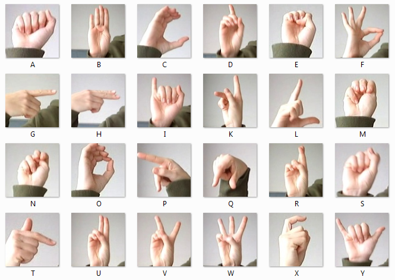

Uncovered key audio traits and predicted song popularity with 80% accuracy using machine learning, empowering artists and marketers to create music that better connects with audiences and cultural trends.

Developed an interactive dashboard to help hospitals improve patient care and resource planning. The dashboard provides insights into patient trends, diagnoses, medications, and staffing needs, driving smarter care and operational efficiency.
Explored the effect of surgery on lung cancer survival using a patient dataset. Applied advanced statistical methods—like comparison groups, matching techniques, and machine learning models to estimate the impact of treatment across different patient types.

Built a pricing model to estimate property values across Barcelona using location and housing features. The model identified key factors influencing price and improved accuracy by 20%, helping make real estate decisions more data-driven and reliable.
NVIDIA Job Posting & Talent Strategy Analysis
Analyzed hiring trends, job roles, and skill gaps at NVIDIA to uncover what the company values in early-career talent. The study provided actionable insights for students aiming to break into AI and software roles to boost employability.
Tarte Market Analysis & Expansion Strategy
Advised Tarte Cosmetics on entering the clean toiletries market to boost revenue and brand reach. Proposed a product and marketing strategy projected to generate $30M in revenue within 3 years after thorough Market Analysis.

Designed and deployed an end-to-end job application workflow using n8n, integrating AI tools, HTTP APIs, and document services. The system automates job scraping, filters relevant roles, rewrites resumes using AI, and sends tailored applications, reducing manual effort and increasing outreach efficiency.